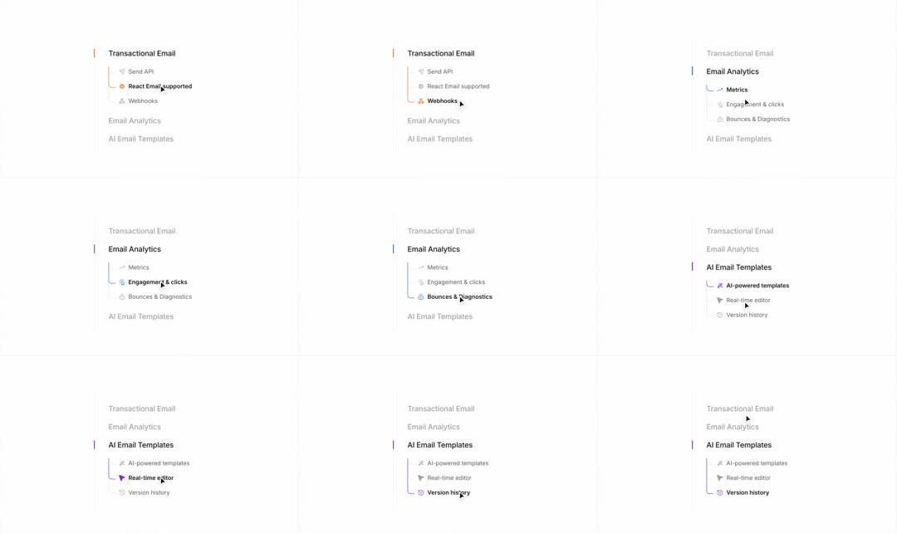

Docs sidebar sub-menu: a docs nav where expanding a section (Transactional Email, Email Analytics, AI Email Templates) draws an animated elbow connector down to its children; the active section gets a colored left accent bar that slides to follow selection, child rows stagger in, and hover sweeps a grey fill.
Media
Frame-by-frame

0-20%
Transactional Email expanded (orange accent): children Send API / React Email supported / Webhooks connected by a thin elbow line from the parent; hover darkens the hovered row's text.
20-40%
Selection moves to Email Analytics: orange accent bar slides up and collapses, blue accent bar slides down beside Email Analytics while its elbow connector draws downward stroke-by-stroke; children (Metrics, Engagement & clicks, Bounces & Diagnostics) fade+slide in with 40ms stagger.
AI Email Templates expands (purple accent), previous section collapses (elbow retracts, children fade up and out); its children stagger in; hover continues through them.
Build prompt
Rebuild this interaction 1:1: a docs sidebar sub-menu - expanding a section (Transactional Email, Email Analytics, AI Email Templates) draws an animated elbow connector down to its children; the active section gets a colored left accent bar that slides to follow selection; child rows stagger in; hover sweeps a grey fill.
## Integration
Integration: stack-agnostic spec - springs given as stiffness/damping, timed motions as duration + curve, canvas/shader notes are perf guidance only; map every value to your framework and animation library of choice.
## Scene
Sidebar with 3 section rows. Expanded section: colored left accent bar (orange for Transactional Email, blue for Email Analytics, purple for AI Email Templates); children connected by a thin elbow line from the parent (Send API / React Email supported / Webhooks; Metrics, Engagement & clicks, Bounces & Diagnostics...).
## Motion spec
Pattern: accordion with drawn connector + traveling accent.
- Expand: elbow connector draws downward stroke-by-stroke (stroke-dashoffset, 250ms ease-out); child rows fade+slide in (opacity, y 6 -> 0) with 40ms stagger.
- Selection change: the accent bar slides from the old section to the new one (300ms ease-in-out), taking the new section's color as it arrives.
- Collapse (old section): elbow retracts (200ms), children fade up and out.
- Hover: grey fill sweeps the row (150ms); hovered row text goes medium weight.
## Calibration
- Connector draw 250ms, stagger 40ms, accent slide 300ms - the three motions overlap slightly for fluidity.
- One shared accent bar that travels - never one bar per section fading in/out.
- Children stagger 40ms; beyond 60ms the list feels like it's buffering.
## Reduced motion
Sections expand/collapse with opacity only (150ms); accent bar jumps with a 150ms fade; no connector draw.
## Don't miss
- The elbow connector draws from the parent down through the children - it's a path, not per-row bullets.
- Accent color is per-section (orange/blue/purple) and the bar carries it.
- Collapse retracts the connector; it doesn't just hide it.